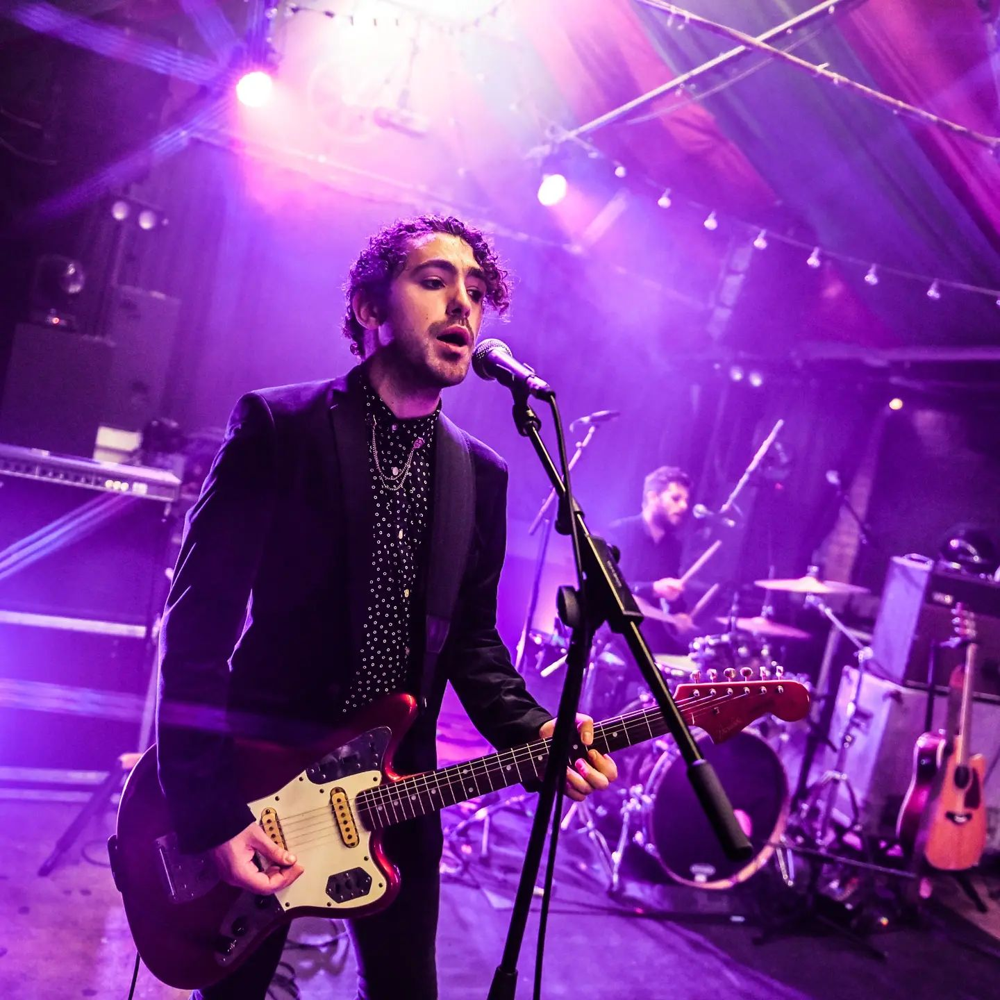
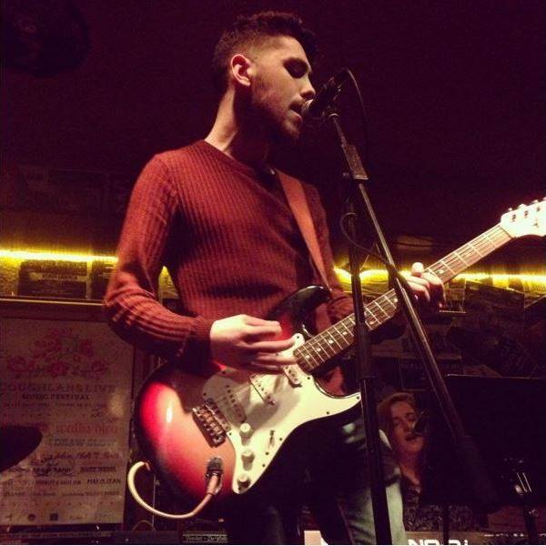

BEGINNINGS
Colm first picked up the guitar at the age of 10. At fifteen he entered the competition 'Guitar' on RTE 2, in which he won a replica Rory Gallagher Fender Stratocaster. From then on he knew that he wanted to play in bands and tour.
COLLEGE
After several unsuccessful attempts at securing band members, he finally met like-minded people just as passionate about writing and performing music in the Cork School of Music. He graduated from CSM with a Bachelor of Honours in Popular Music (Electric Guitar) in 2017, and joined two bands with whom he would then go on to record and tour - "Black Pope" and "The Vercettis".